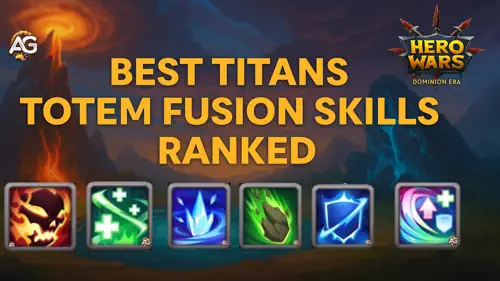
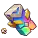
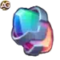
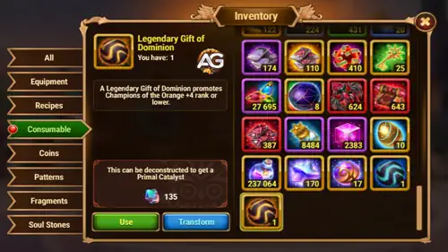
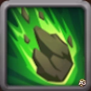
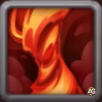
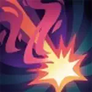
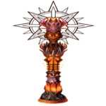
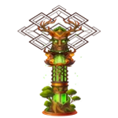
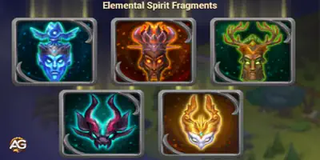

La Fusion de totem fue actualizada, y las mejores elecciones de habilidades cambiaron con ella. Esta guia renovada clasifica las habilidades de Fusion elementales y primordiales actuales y explica lo que cada una hace realmente en combate.
Los valores de abajo usan los datos actuales de referencia del juego con totem nivel 130, totem rango 6 y habilidad rango 6. Tus numeros exactos pueden cambiar segun el poder del totem y el rango de la habilidad, pero las prioridades y sinergias de abajo se basan en los efectos actualizados de rango maximo.

Guia de Fusion de totem - Hero Wars: Dominion Era, un juego desarrollado por Nexters.
La Fusion de totem es el sistema que te permite agregar habilidades adicionales a los totems de Espiritu elemental en Hero Wars: Dominion Era. Estas habilidades se suman a la habilidad basica del totem y dan a tu equipo de Titanes control adicional, dano explosivo, escudos, curacion, energia o escalado de ataque.
Las habilidades elementales son las habilidades de Fusion mas explosivas. Pueden activar control, dano, barreras defensivas, ventanas anti-muerte o efectos adicionales vinculados a acciones enemigas.
Las habilidades primordiales son habilidades pasivas de apoyo. Normalmente reaccionan a cosas que tus Titanes ya hacen, como recibir un escudo, ser curados, usar una habilidad o luchar con poca Salud.
El conjunto actualizado tiene 12 habilidades elementales y 5 habilidades primordiales. Como las habilidades duplicadas no se acumulan limpiamente, la mejor eleccion depende de tu elemento, de la primera activacion de tu totem y de si tu equipo gana por burst, control, sostenimiento o combates largos.
Habilidades de totem - Como funciona la Fusion?
Fusion de Espiritu elemental
Las habilidades de Fusion se crean y mejoran con catalizadores. Si fusionas una habilidad que tu totem ya tiene, tus probabilidades de ver esa misma habilidad otra vez aumentan, y el resultado tiene mas posibilidades de aparecer en un rango superior.
Puedes rechazar el resultado creado antes de aceptarlo. Una vez que aceptas una habilidad de Fusion, tratala como parte de la build de ese totem y planifica alrededor de ella.
Si dos totems traen la misma habilidad de Fusion, los bonus no se acumulan como dos efectos separados. En el mejor caso, se aplica la version mas fuerte o se refresca la duracion, asi que evita copiar la misma habilidad en varios totems salvo que tengas una razon muy especifica.
Las habilidades elementales suelen decidir el ritmo del combate. Las habilidades primordiales normalmente hacen que tus Titanes sean mas dificiles de matar, carguen mas rapido o sean mas peligrosos a medida que la batalla continua.
Catalizador elemental vs catalizador primordial - Cual es la diferencia?
La Fusion de totem usa dos tipos de catalizadores. El que necesitas depende del tipo de habilidad que intentas fusionar.
Los catalizadores elementales se usan para habilidades elementales. Estas habilidades suelen ser efectos activos de combate, como control, dano explosivo, barreras o castigos basados en activadores.
Los catalizadores primordiales se usan para habilidades primordiales. Estas habilidades son efectos pasivos de apoyo que reaccionan a condiciones del Titan como curacion, escudos, Energia, Salud faltante y uso de habilidades.
Tipo
Usado para
Efecto de habilidad

Catalizador elemental
Habilidades elementales
Control, dano explosivo, barreras, ventanas anti-muerte y efectos del campo de batalla

Catalizador primordial
Habilidades primordiales
Efectos pasivos ligados a curacion, escudos, Energia, Salud faltante o uso de habilidades
Como obtener catalizadores elementales
Los catalizadores elementales estan ligados principalmente a la conversion de Fragmentos de totem y a recompensas de Fusion de totem. Si tienes Fragmentos de totem extra, cambiarlos mediante la interfaz de Fusion es la forma directa de impulsar tiradas y mejoras de habilidades elementales.
Consejo: Guarda tus fragmentos cuando busques una habilidad especifica de alto impacto, porque usar catalizadores en lotes mas grandes mejora tus probabilidades de obtener un resultado util.
Como obtener catalizadores primordiales
Una de las formas mas valiosas de obtener catalizadores primordiales es deconstruir un Regalo legendario de Dominion. Este objeto normalmente se usa para mejorar todo el equipo de un heroe al rango naranja, asi que convertirlo debe ser una decision deliberada.

Como obtener catalizadores primordiales, Hero Wars Dominion Era.
Si no necesitas urgentemente un Regalo legendario de Dominion para equipo de heroes, convertirlo en catalizadores primordiales puede valer la pena para cuentas enfocadas en Titanes. Un Regalo legendario da 135 unidades de catalizador primordial.
Consejo: Los regalos de Dominion y los catalizadores son recursos raros. Gastalos alrededor del equipo de totem que realmente usas en Guerra de gremio, Choque de mundos y PvP diario de Titanes.
Lista completa actualizada de habilidades de Fusion de totem
Todos los valores de esta lista se muestran para totem nivel 130, totem rango 6 y habilidad rango 6. Los efectos que dicen depender del poder del totem o del rango de habilidad pueden escalar de manera diferente en builds mas bajas.
Habilidades elementales
Ultimo Destello
Descripcion en el juego de la habilidad de totem: Cuando un Titan deberia morir, entra en un estado de furia ardiente en su lugar. Su velocidad aumenta un 15%. Mientras esta enfurecido, el poder del ataque del Titan aumenta y se vuelve invulnerable a todos los efectos, mientras su Salud no puede bajar de 1. El Titan muere cuando el efecto termina. Se activa una vez por batalla.
Explicacion de la habilidad de totem: Ultimo Destello es una habilidad de supervivencia de emergencia. Es mas fuerte en Titanes que pueden seguir aturdiendo, haciendo dano o cargando el totem despues de que normalmente ya estarian muertos, como Moloch, Angus o una composicion con Nova tanque.
Valores en rango maximo: Aumento de ataque: 112,125; duracion: 20 segundos; recarga: 300 s.
Polvo Estelar
Descripcion en el juego de la habilidad de totem: El campo de batalla queda cubierto por una tormenta magica que deja una distorsion. El efecto esta activo durante 15 s, y la energia empuja periodicamente a un Titan aleatorio. Mientras dura el efecto, cualquier movimiento de un Titan en el campo de batalla le inflige dano segun la distancia recorrida.
Explicacion de la habilidad de totem: Polvo Estelar castiga el movimiento, asi que mejora mucho cuando los Titanes son empujados, atraidos o forzados a reposicionarse. Es una habilidad de matchup mas que una mejor opcion universal.
Valores en rango maximo: Dano por movimiento: 828,750; frecuencia de empuje: cada 1 s.
Edad de Hielo
Descripcion en el juego de la habilidad de totem: Cuando se activa la habilidad base del totem del oponente, todos sus Titanes quedan congelados durante 1 s y pierden la capacidad de actuar. Tambien reciben el efecto de fragilidad, que aumenta todo el dano recibido.
Explicacion de la habilidad de totem: Edad de Hielo sigue siendo una de las opciones PvP mas seguras. Interrumpe el timing del totem enemigo y agrega una larga ventana de fragilidad, haciendo que tu dano posterior sea mucho mas amenazante.
Valores en rango maximo: Bonus de dano por fragilidad: 55%; duracion de fragilidad: 15 s.
Ira de las Profundidades

Descripcion en el juego de la habilidad de totem: En el momento de su muerte, un Titan aliado se convierte en piedra, se eleva sobre el campo de batalla y luego cae justo en el centro del equipo enemigo. La piedra inflige dano de area y aturde a los enemigos. Se activa una vez por batalla.
Explicacion de la habilidad de totem: Ira de las Profundidades puede robar impulso despues de que muere un Titan, pero es reactiva. Es util cuando se espera que tu primera linea caiga, aunque es mas debil que las habilidades que crean presion antes de perder un Titan.
Valores en rango maximo: Dano: 2,193,750; duracion del aturdimiento: 4 s; recarga: 300 s.
Anomalia Gravitacional
Descripcion en el juego de la habilidad de totem: Invoca una anomalia en el centro del equipo enemigo. Atrae a los enemigos y les inflige dano durante 5 s. Cuanto mas lejos esten los Titanes de su epicentro, menos dano reciben.
Explicacion de la habilidad de totem: Anomalia Gravitacional es mejor cuando tu equipo se beneficia de agrupar enemigos. Puede ayudar a que el dano de area conecte mejor, pero su valor depende del posicionamiento enemigo y de si tu equipo puede castigar la atraccion rapidamente.
Valores en rango maximo: Dano en el epicentro: 1,669,078.
Llamarada Nova
Descripcion en el juego de la habilidad de totem: Crea una llamarada nova en el campo de batalla. Se concentra durante 5 s. Durante 2 s despues de la activacion, la Salud de los Titanes aliados no puede bajar de 1. Despues de eso, la llamarada explota e inflige dano a todos los enemigos.
Explicacion de la habilidad de totem: Llamarada Nova combina una breve ventana anti-muerte con gran dano a todo el equipo enemigo. Es una de las mejores habilidades universales porque puede salvar a tu equipo durante un burst letal y luego castigar al lado enemigo.
Valores en rango maximo: Dano de explosion: 5,449,641.
Danza de Llamas

Descripcion en el juego de la habilidad de totem: Invoca un vortice ardiente que atraviesa al equipo enemigo e inflige dano a los oponentes cercanos.
Explicacion de la habilidad de totem: Danza de Llamas es simple y agresiva. Brilla en planes de Fuego y Oscuridad que quieren eliminar enemigos antes de que se estabilicen, pero ofrece menos control que Edad de Hielo o Velo de Suenos.
Valores en rango maximo: Dano a los oponentes en cada activacion: 973,294.
Susurro de las Profundidades
Descripcion en el juego de la habilidad de totem: Crea un remolino que restaura Salud a los Titanes aliados e inflige dano a enemigos cercanos durante 10 s. Cada vez que se activa, la Salud restaurada se distribuye entre los Titanes que necesitan curacion.
Explicacion de la habilidad de totem: Susurro de las Profundidades es una habilidad de sostenimiento. Es mejor en combates largos y en equipos que pueden sobrevivir lo suficiente para recibir todo el valor de curacion.
Valores en rango maximo: Dano y restauracion total de Salud en cada activacion: 486,647.
Murmullo de los Riscos
Descripcion en el juego de la habilidad de totem: Crea una cascada rocosa en el campo de batalla que protege a todos los aliados de cualquier ataque. Pierde durabilidad cuando recibe dano, pero refleja el doble del dano recibido de vuelta a los atacantes.
Explicacion de la habilidad de totem: Murmullo de los Riscos es una de las habilidades defensivas mas fuertes. Compra tiempo para equipos lentos, protege ultimates clave y castiga a los enemigos que siguen atacando la barrera.
Valores en rango maximo: Dano absorbido por la barrera: 5,654,756.
Materia Oscura

Descripcion en el juego de la habilidad de totem: Cada vez que un enemigo recibe un efecto de aturdimiento, es golpeado por un cometa. Inflige dano y aumenta la vulnerabilidad al dano elemental en 75%.
Explicacion de la habilidad de totem: Materia Oscura es excelente cuando tu equipo ya aplica aturdimientos. Moloch, Nova y varias composiciones de control de Luz pueden convertir esto en dano adicional repetido mas una enorme ventana de dano elemental.
Valores en rango maximo: Dano del cometa: 2,437,500; duracion de vulnerabilidad: 21 s.
Secuencia Principal
Descripcion en el juego de la habilidad de totem: Cada pocos segundos, aumenta la estadistica de ataque de todos los Titanes aliados hasta el final de la batalla.
Explicacion de la habilidad de totem: Secuencia Principal recompensa a los equipos que pueden alargar el combate. Los equipos de Agua y Tierra suelen aprovecharla mejor porque pueden sobrevivir mientras los bonus de ataque se acumulan.
Valores en rango maximo: Bonus de ataque: 146,250; frecuencia de activacion: una vez cada 5 segundos.
Velo de Suenos
Descripcion en el juego de la habilidad de totem: Cuando se activa la habilidad base del totem del oponente, aplica un efecto de sueno a todos los Titanes enemigos. Los Titanes afectados se duermen y permanecen inactivos hasta despertar. El efecto se desactiva cuando se agota el temporizador o cuando un Titan recibe suficiente dano.
Explicacion de la habilidad de totem: Velo de Suenos es una poderosa habilidad de control porque puede pausar a todo el equipo enemigo despues de la activacion de su totem. Es mejor cuando tu equipo puede elegir cuando hacer burst, porque demasiado dano puede despertar temprano a los Titanes dormidos.
Valores en rango maximo: Duracion: 7.75 segundos; dano hasta despertar: 2,925,000; recarga: 10 s.
Habilidades primordiales
Pulso de los Antiguos
Descripcion en el juego de la habilidad de totem: Cada vez que un Titan aliado usa una habilidad, es curado.
Explicacion de la habilidad de totem: Pulso de los Antiguos es sostenimiento fiable para equipos que usan habilidades con frecuencia. Ayuda a estabilizar el combate medio, aunque la curacion no siempre cae sobre el Titan bajo mas presion.
Valores en rango maximo: Curacion: 780,000; activacion: no mas de una vez cada 8.5 segundos.
Celo Primordial
Descripcion en el juego de la habilidad de totem: Al usar una habilidad basica, el Titan tiene una probabilidad de restaurar parte de su Energia.
Explicacion de la habilidad de totem: Celo Primordial es mas fuerte despues de la actualizacion porque la probabilidad de activacion es alta. Agrega aleatoriedad, pero esa aleatoriedad puede ganar combates al acelerar habilidades clave de Titanes o el timing del totem.
Valores en rango maximo: Cantidad de Energia: 255; probabilidad de activacion: 70%; recarga: 5 s.
Egida de Eco
Descripcion en el juego de la habilidad de totem: Cuando se rompe un escudo aplicado a un Titan de tu equipo, se le aplica otro escudo durante 5 s.
Explicacion de la habilidad de totem: Egida de Eco es excelente en equipos que ya crean escudos. Es especialmente atractiva con proteccion de estilo Tierra y cualquier build que quiera superponer ventanas defensivas.
Valores en rango maximo: Durabilidad del escudo: 23.5% de la Salud maxima del Titan; probabilidad de activacion: 120%; recarga: 5 s. La probabilidad por encima de 100% se convierte en durabilidad de escudo.
Ciclo Triple
Descripcion en el juego de la habilidad de totem: Si un Titan recibe un escudo, es curado. Si un Titan es curado, su ataque se vuelve mas poderoso. Si el ataque del Titan recibe un bonus, se le aplica un escudo. Solo se activa un efecto por activacion.
Explicacion de la habilidad de totem: Ciclo Triple es la mejor habilidad primordial general porque convierte efectos de apoyo comunes en un bucle de curacion, ataque y escudos. Encaja en muchos equipos sin necesitar timing manual.
Valores en rango maximo: Curacion: 39,000 de Salud por segundo; bonus de ataque: 170,625; durabilidad del escudo: 351,000; duracion de cualquier efecto: 12 s; recarga: 10 s.
Llamado de los Elementos
Descripcion en el juego de la habilidad de totem: El ataque del Titan aumenta proporcionalmente a su Salud faltante.
Explicacion de la habilidad de totem: Llamado de los Elementos es un escalador de dano arriesgado. Puede cambiar combates cerrados cuando un Titan sobrevive con poca Salud, pero es menos fiable que escudos, curacion o aceleracion de Energia.
Valores en rango maximo: Bonus de ataque: 14,625 por cada 11% de Salud faltante.
Tier list actualizada de Fusion de totem
Esta es una tier list PvP general. La sinergia especifica de cada elemento puede subir o bajar una habilidad, asi que usa las recomendaciones por elemento de abajo antes de gastar catalizadores raros.
Tier list de habilidades elementales
Tier
Habilidades
Por que estan aqui
Tier S
Edad de HieloVelo de SuenosLlamarada NovaUltimo Destello
Estas habilidades pueden detener el ritmo enemigo, evitar dano letal o crear ventanas de burst que ganan combates.
Tier A
Murmullo de los RiscosMateria OscuraSecuencia PrincipalDanza de Llamas
Excelentes cuando encajan con el elemento o plan de batalla correcto, pero no tan universales como el Tier S.
Tier B
Anomalia GravitacionalSusurro de las ProfundidadesPolvo EstelarIra de las Profundidades
Utiles en matchups especificos, pero mas dependientes del timing, el movimiento enemigo o la muerte de un Titan.
Ranking elemental general
Rango
Habilidad
Mejor uso
#1
Edad de Hielo
Mejor control PvP general y amplificacion de dano despues de que se activa el totem enemigo.
#2
Velo de Suenos
Gran efecto de sueno en todo el equipo enemigo, especialmente fuerte cuando puedes controlar el timing de tu burst.
#3
Llamarada Nova
Dano masivo mas una breve ventana anti-muerte para tu equipo.
#4
Ultimo Destello
Gran valor de emergencia en Titanes que siguen siendo peligrosos despues de llegar a 1 de Salud.
#5
Murmullo de los Riscos
Mejor opcion defensiva para Tierra, Agua y equipos de sostenimiento mas lentos.
#6
Materia Oscura
Excelente con equipos cargados de aturdimientos porque agrega dano de cometa y vulnerabilidad elemental.
#7
Secuencia Principal
Fuerte en combates largos donde el bonus de ataque repetido tiene tiempo de crecer.
#8
Danza de Llamas
Dano de area ofensivo fiable, especialmente para equipos de Fuego y Oscuridad que necesitan muertes rapidas.
#9
Anomalia Gravitacional
Buena cuando tu equipo se beneficia de agrupar enemigos en el centro.
#10
Susurro de las Profundidades
Buen sostenimiento, pero mas lento y menos explosivo que las mejores opciones PvP.
#11
Polvo Estelar
Puede castigar combates con mucho movimiento, pero necesita el matchup correcto para brillar.
#12
Ira de las Profundidades
Aturdimiento poderoso despues de la muerte, pero reactivo y solo una vez por batalla.
Tier list de habilidades primordiales
Tier
Habilidades
Por que estan aqui
Tier S
Ciclo Triple
La habilidad primordial mas flexible porque curacion, escudos y bonus de ataque alimentan efectos utiles.
Tier A
Celo PrimordialEgida de EcoPulso de los Antiguos
Fuerte valor practico: Energia mas rapida, escudos extra o curacion constante segun tu equipo.
Tier B
Llamado de los Elementos
Puede ayudar en combates cerrados, pero necesita sobrevivir con poca Salud para alcanzar su mejor valor.
Ranking primordial general
Rango
Habilidad
Mejor uso
#1
Ciclo Triple
Mejor bucle universal de apoyo para escudos, curacion y bonus de ataque.
#2
Celo Primordial
Alta probabilidad de restaurar Energia, haciendo que tus combates sean menos previsibles de una buena manera.
#3
Egida de Eco
Excelente para equipos de escudos y builds de Tierra con proteccion estilo Avalon.
#4
Pulso de los Antiguos
Curacion fiable despues de habilidades, especialmente en combates largos.
#5
Llamado de los Elementos
Escalado de ataque de nicho para Titanes que sobreviven con poca Salud.
Mejores habilidades de Fusion por elemento
La mejor habilidad no siempre es la habilidad con mayor ranking general. Tu elemento cambia el valor de cada habilidad de Fusion porque cada totem carga de forma distinta y cada composicion de Titanes gana de una manera diferente.
Elemento
Mejores opciones elementales
Mejores opciones primordiales
Notes
Agua
Murmullo de los RiscosSusurro de las ProfundidadesUltimo DestelloEdad de Hielo
Ciclo TripleCelo PrimordialPulso de los Antiguos
Murmullo de los Riscos compra tiempo para Sigurd o Nova. Ciclo Triple tiene gran sinergia porque Agua ya se apoya en curacion y sostenimiento.

Fuego
Danza de LlamasUltimo DestelloMateria OscuraLlamarada Nova
Celo PrimordialCiclo Triple
Fuego quiere presion. Danza de Llamas y Llamarada Nova agregan burst, mientras que Ultimo Destello permite que Moloch siga aturdiendo despues de un golpe letal.

Tierra
Murmullo de los RiscosSusurro de las ProfundidadesUltimo DestelloSecuencia Principal
Egida de EcoCiclo TriplePulso de los Antiguos
Tierra puede alargar los combates, asi que los escudos y el ataque escalable son muy valiosos. Egida de Eco es especialmente buena con juego basado en escudos.
Luz
Susurro de las ProfundidadesMateria OscuraEdad de HieloLlamarada Nova
Ciclo TripleCelo Primordial
Luz tiene acceso a muchos momentos de control. Materia Oscura puede ser fuerte, pero recuerda que su vulnerabilidad aumenta especificamente el dano elemental.
Oscuridad
Danza de LlamasSusurro de las ProfundidadesPolvo EstelarAnomalia Gravitacional
Ciclo TripleCelo Primordial
Oscuridad a menudo necesita ganar rapido. Danza de Llamas refuerza la ofensiva, mientras que Polvo Estelar y Anomalia Gravitacional son opciones experimentales basadas en movimiento.

Cualquier equipo
Edad de HieloVelo de SuenosLlamarada NovaUltimo Destello
Ciclo TripleCelo PrimordialEgida de Eco
Estas son las inversiones generales mas seguras cuando construyes alrededor de un segundo totem o no quieres una contraopcion demasiado estrecha.
Consejos para equipos de dos totems
En equipos de dos totems, un totem normalmente se activara antes que el otro segun las posiciones de tus Titanes y que tan rapido gana Energia cada lado.
Como regla, coloca tu habilidad elemental activa mas importante en el totem que se activa primero. Pon habilidades pasivas o de valor mas lento en el segundo totem, especialmente habilidades primordiales que siguen funcionando durante todo el combate.
No acumules habilidades de Fusion duplicadas en ambos totems a menos que aceptes el desperdicio. Las copias de la misma habilidad no se acumulan como bonus separados; en el mejor caso, gana el efecto mas fuerte o se refresca la duracion.
FAQ de Fusion de totem
P: Puedo fusionar habilidades en un totem por debajo del nivel 130?
R: Si. Los valores de esta guia usan nivel 130, rango 6 y rango de habilidad 6 para comparar, pero la Fusion puede usarse antes de eso.
P: Los totems por debajo de Estrella absoluta pueden usar Fusion?
R: Si. Incluso un totem con menos estrellas puede beneficiarse de la Fusion si tienes los catalizadores requeridos.
P: Que habilidad elemental debo buscar primero?
R: Para PvP general, empieza con Edad de Hielo, Velo de Suenos, Llamarada Nova o Ultimo Destello. Para builds especificas por elemento, Murmullo de los Riscos, Danza de Llamas, Materia Oscura o Secuencia Principal pueden ser mejores.
P: Que habilidad primordial es la inversion mas segura?
R: Ciclo Triple es la opcion general mas segura. Celo Primordial tambien es muy fuerte despues de la actualizacion por su alta probabilidad de restaurar Energia.
P: Dos copias de la misma habilidad de Fusion se acumulan?
R: No. Los duplicados no se acumulan como bonus completos separados. En la mayoria de los casos, deberias diversificar las habilidades de tus totems.
P: Puedo rechazar un mal resultado de Fusion?
R: Si. Puedes rechazar el resultado creado antes de aceptarlo y conservar el estado anterior de tu totem.
Conclusion
La Fusion de totem ahora es mucho mas profunda que la version original de seis habilidades. La actualizacion agrego mas control, mas ventanas de burst, mas escalado y mas decisiones especificas por equipo, asi que la mejor respuesta ya no es una habilidad universal para todas las cuentas.
Para la mayoria de jugadores PvP, las prioridades elementales mas seguras son Edad de Hielo, Velo de Suenos, Llamarada Nova y Ultimo Destello. Para habilidades primordiales, Ciclo Triple es la opcion general mas fuerte, con Celo Primordial y Egida de Eco cerca segun tu equipo.
Usa la tier list para la prioridad general, luego usa la tabla de elementos para elegir la habilidad que realmente encaja con tus Titanes. Ahi es donde la Fusion de totem empieza a ser poderosa en vez de solo cara.
Alexandre Domingos tiene un posgrado en Ingenieria y trabaja como supervisor de produccion. En su tiempo libre, explora el mundo de los videojuegos como YouTuber y bloguero en Alexandre Games, combinando su pasion por la tecnologia y la estrategia. Esta inmerso en los juegos desde los 5 anos, empezando en plataformas clasicas como MSX, Master System, Nintendo e incluso una antigua PC 286.
Video: NUEVO SISTEMA DE FUSION DE TOTEM! | Guia completa - Hero Wars: Dominion Era (PvP/PvE)Audio en varios idiomas (portugues principal) con subtitulos!
Explora nuevas habilidades con nuestras guias destacadas!
Te gusto nuestra tier list y guia de habilidades de Fusion de totem para Hero Wars: Web y Facebook? Hay algo que no entendiste o quieres sugerir cambios? Te invitamos a participar en la seccion de comentarios de la pagina del blog Alexandre Games. Sientete libre de expresar tu opinion, aclarar tus dudas y compartir tus sugerencias. Haz clic en el boton de abajo para comenzar:


 Agua
Agua
 Luz
Luz
 Oscuridad
Oscuridad


 Calendario de Hero Wars: Dominion Era
Calendario de Hero Wars: Dominion Era